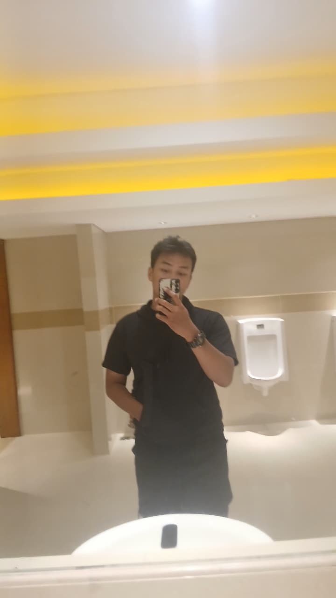
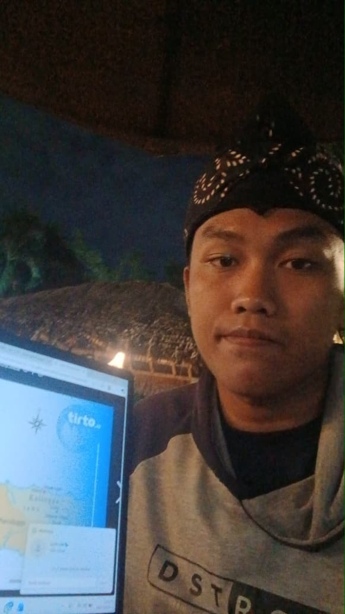
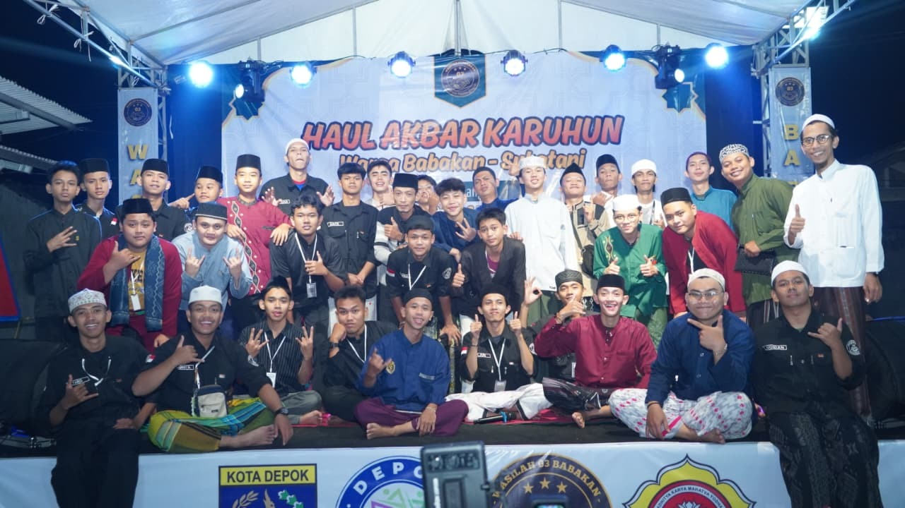
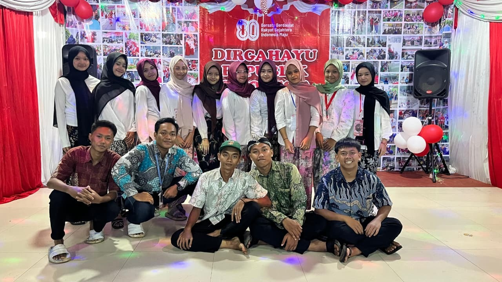
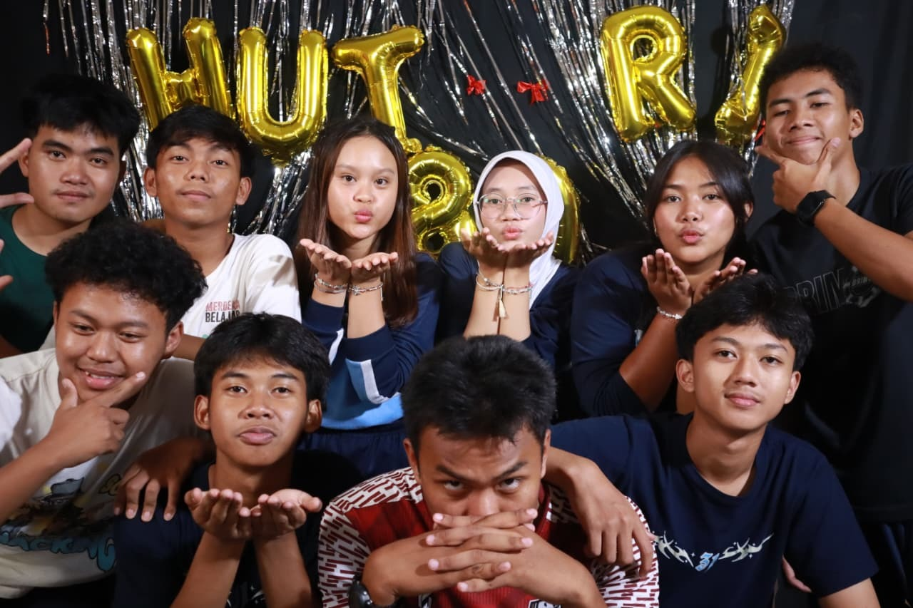

Experience & Journey
Mahasiswa Teknik Informatika
Universitas Gunadarma
Saya memulai Karier Akademik di Universitas Gunadarma dengan jurusan Teknik Informatika karena saya tertarik dengan dunia teknologi dan ingin menjadi seorang software engineer. juga sebagai modal saya untuk meningkatkan kemampuan saya dibidang teknologi.
Klik untuk lihat dokumentasi
Dokumentasi: Ketika Saya menjadi mahasiswa universitas Gunadarma.
Pemecahan rekor MOST APP BUILD BY AI WITH AWS
GUINNESS WORLD RECORDS
Pemecahan rekor pembuatan aplikasi terbanyak dengan AI terbanyak dalam waktu 24 jam, yang diikuti oleh Siswa SMAN 4 Kota Depok.
Klik untuk lihat dokumentasi
Dokumentasi:ketika mendesain UI/UX dan menyiapkan untuk membuat projek.
Event Organizer
Kompetisi Lomba Hadroh Wasilah Babakan 2024
Bertanggung jawab penuh dalam menyukseskan acara kompetisi lomba hadroh yang diselenggarakan oleh Wasilah Babakan.
Klik untuk lihat dokumentasi
Dokumentasi: Ketika Acara telah sukses diadakan sampai akhir acara.
Ketua Penyelenggara Acara Karang Taruna
Kawasan Rt 07/Rw 03
Bertanggung jawab penuh dalam menyukseskan acara yang diadakan Karang Taruna.
Klik untuk lihat dokumentasi
Dokumentasi: Ketika acara Sukses Berjalan Sampai Hari H.
Awal Masuk Jenjang SMA
SMAN 4 Kota Depok
Awal memasuki jenjang SMA, Saya berusaha untuk beradaptasi dengan lingkungan sekolah dan mengikuti berbagai kegiatan untuk mengembangkan diri.
Klik untuk lihat dokumentasi
Dokumentasi: Foto Dokumentasi Saat Saya Kelas 10.